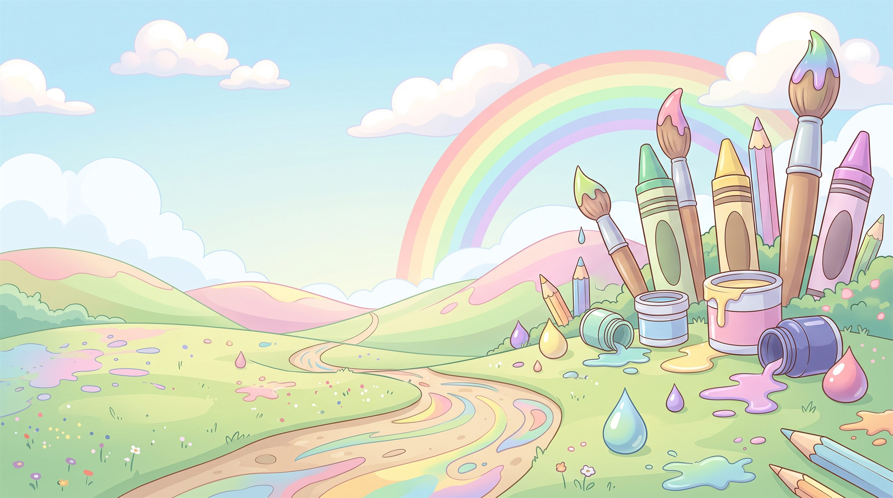

35 د
3,240
وادي الألوان
ارسم ولوّن مع القطة مشمش
أهلاً يا
عمر
! ماذا نرسم اليوم؟
ارسم بحرية
لوحة بيضاء وأقلام وألوان، ارسم ما تحب
ابدأ الرسم
لوّن رسمة
اختر رسمة جاهزة، واضغط على أي جزء لتلوّنه
اختر رسمة
رسومات للتلوين
إبداعاتي من الوادي
كل إبداعاتي
الخريطة
كل الأقسام
غرفتي
المتصدرون
 35 د
35 د 3,240
3,240